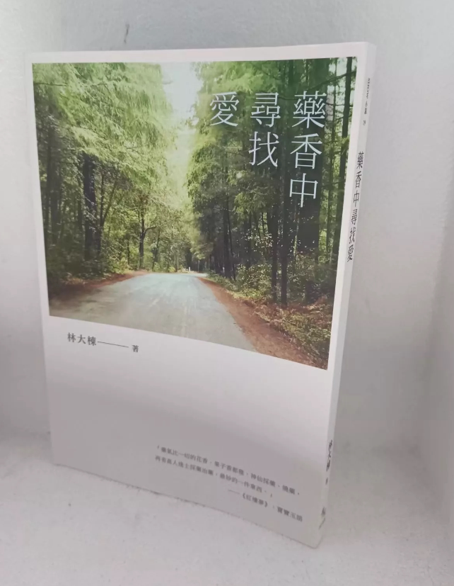

藥香中尋找愛(原創小說)

◆旅美中醫師，以醫學專業與華文創作，引領讀者一窺中醫的綺麗世界！
多年前在南加州的洛杉磯，一個巨大而活力四射的大都會，一個炎熱的午後……
在南加州生活的工程師黃誠強，因為朋友的介紹、誤打誤撞來到「甘醫生的中醫課」，原以為只是一場無須投注太多心力的社交應酬，沒想到甘麗澤醫生不僅帶他一頭栽進了中醫世界，也栽進了一場意想不到的動人愛戀……
人們口中的活菩薩「小楊」到底是何方神聖？他和名醫范雨農之間的師徒情緣，還隱藏了一段預言未來的神祕暗號？主角一路尋找名醫小楊，卻不知最後得到的答案是……
本書集結兩篇中篇小說〈藥香中的愛情故事〉和〈尋找小楊〉而成，以中醫為題材主軸，背景走過美國西岸的人文風土，在現代與傳統、西方與東方間，作者透過輕鬆詼諧的筆觸，帶領讀者走進既熟悉又陌生的中醫世界，一窺人們在中醫世界中的生活樣貌和情感。文中穿插淺顯易懂的中醫常識，讓純文學的閱讀更添興味。
本書特色
1.執業中醫師以醫學專業與文學創作，引領讀者進入中醫的綺麗世界。
2.旅居美西的華文視角，融合西方文化與東方情調。
3.深入淺出的中醫常識，為文學閱讀提供嶄新體驗。
|